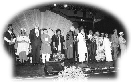
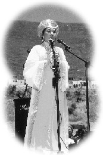
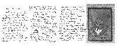
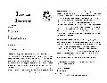
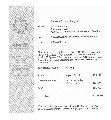
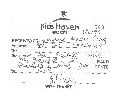

| Reportages spéciaux |
 Le Parlement des religions du monde s'était tenu du 1er au 8 décembre 1999, au Cap en Afrique du Sud. Cette ville est blottie contre la montagne Table , face à l'océan Atlantique et Indien. Elle est la demeure de nombreuses races, traditions religieuses et cultures. Au Parlement, sponsorisé par le gouvernement sud africain, professeurs, érudits, religieux et leaders spirituels, croyants et pratiquants venus de tous les horizons du monde étaient rassemblés pour partager leurs opinions et sagesse, célébrer leurs différentes origines et discourir sur la morale vitale, les sujets spirituels et religieux faisant aujourd'hui face à la communauté mondiale.
Dans la ville, on ne pouvait pas faire deux pâtés de maison sans voir les posters de Maître qui donnaient à l'environnement une sensation chaleureuse provenant de Son amour et de Sa bénédiction. L'ouverture du Parlement, le 1er Décembre, coïncidait avec la journée Mondiale du Sida. Á ce titre, les leaders religieux ont fait pendant une heure un discours adressant des doléances aux gouvernements du monde entier d'oeuvrer étroitement à la cause des victimes du Sida, et aux populations mondiales d'aider ceux-ci dans la prière. Cette cérémonie s'est terminée par une prière silencieuse.
Après le discours d'ouverture, nos amis pratiquants, chacun élégamment vêtu dans sa propre tradition et sous la bannière d'un ruban bleu portant le nom de l'Association Internationale du Maître Suprême Ching Hai, se sont joints au défilé d'ouverture du Parlement. Nous étions en très grand nombre comparé aux autres groupes présents. Nous attirions ainsi le plus de regards. Les Sud Africains étaient stupéfiés de voir que notre groupe était venu de tous les continents pour participer avec enthousiaste à cet évènement. Certains d'entre nous tenaient les brochures des invitations pour le discours de Maître, avec Sa splendide photo en couverture, qui devaient être distribuées le jour suivant. Les gens s'approchaient pour en demander. Alors que la procession avançait, nous sommes passés devant une petite voiture rouge, apercevant Maître dedans, qui attendait Son tour pour parler à la cérémonie suivante du Parlement. Elle était habillée d'une tenue classique au lac d'une couleur éclatante dorée et portait un chapeau d'un style traditionnel royal de la même couleur. Les cloches de l'église se sont mises à sonner lorsque la marche est arrivée sur les lieux de la cérémonie, annonçant le début de ce magnifique évènement.
 La cérémonie se tenait à l'extérieure en haut d'une colline dans le District historique Six du Cap qui est devenu célèbre au milieu des années 1960, comme étant un secteur triste et terrifiant lors de l'Apartheid (ségrégation raciale) en Afrique du Sud. Cette politique gouvernementale avait commencé en 1948, c'était illégal pour les Noirs de vivre ou même de visiter les grandes villes sud africaines sans l'obtention d'un laissez-passer spécial du gouvernement. Tous les résidents Noirs des villes avaient été chassés vers des banlieues éloignées, séparant ainsi et souvent des familles entières. Leurs positions ainsi que leurs propriétés leur étaient confisqués et beaucoup d'entre eux laissés sans ressources. En ce qui concerne le District Six du Cap, il a été déclaré zone de destruction sous la politique d'assainissement du secteur mis au point en 1966, les résidents ont été déplacés. Bien que cette politique ait changée depuis la libération de Nelson
Mandela de prison en 1993 (il est devenu président d'Afrique du Sud en 1994), beaucoup de Noirs sud africains portent encore en mémoire les cicatrices de ces tristes périodes et leurs discours émouvants nous rappellent que nous appartenons tous à une et même famille universelle.
Cette cérémonie avait une importance capitale à tout point de vue. Pour ceux présents, on pouvait sentir une guérison prendre place à grande échelle. L'évènement tout entier était couvert de dignité et de symbolisme, aussi nous nous sentions honorés de représenter le grand amour et les bénédictions que Maître offrait au monde.
La cérémonie du District Six se tenait sur une grande plate-forme circulaire au pied de la majestueuse montagne Table. Tout parti d'un éclaireur portant une grande torche. Des haut-parleurs étaient placés aux quatre coins de la plate-forme, symbolisant ainsi les portes d'entrées des quatre directions du monde, le Nord, le Sud, l'Est et l'Ouest. La légende dit que chacune des quatre directions est gardée par l'une de chaque race de l'humanité (blanche, noire, jaune et rouge) et chacune d'elles étant la gardienne d'un élément (le feu, la terre, le vent et l'eau). Au centre se trouvait la grande torche qui devait brûler toute la semaine qui couvrait la cérémonie du Parlement des religions du monde.
Les responsables de chaque race se tenaient à un endroit bien spécifique et s'adressaient à l'audience comme porte-parole des siens. Un moment émouvant de la cérémonie étaient que tous les aînées de toutes les races étaient des femmes accompagnées de petites filles. Cela était non seulement un symbole sublime de transition vers plus de tolérance, d'amour et d'indulgence envers les personnes âgées (représentées par des grands-mères qui passaient leur sagesse aux jeunes filles), mais aussi c'était un proche parallèle des divers discours de Maître lors de la retraite au Cap : combien il y avait plus de paix dans les sociétés matriarcales (dirigées par les femmes) et que nous devions retourner dans ces racines pour avancer vers l'Âge d'Or. Étant donné que Maître est, Elle-même, la représentation d'un leader spirituel féminin qui transcende les normes de nombreuses religions, sa présence à cet évènement symbolique représentait un important jalon pour notre histoire spirituelle et culturelle.
Lorsque la torche symbolique s'est convergée vers la flamme centrale, un prêtre Anglican a conduit l'audience à la prière. Il a été demandé à plusieurs leaders des communautés locales de donner leurs points de vue pour la reconstruction du futur. Maître a été présentée avec un grand prêtre des États de Chiapas, au Mexique et un autre prêtre. Après les prières émouvantes par les prêtres, Maître est montée sur scène a donné des encouragements retentissants.
Parlement des Religions du Monde
Cérémonie d'ouverture
1er Décembre 1999
Maître a proposé une prière d'ouverture , qui est la suivante :
Merci Père.
Merci , frères et soeurs , d'avoir pris le temps de venir prier ici pour l'Afrique. Tous ensemble nous allons aussi prier pour le monde. Puis-je vous demander quelques secondes de silence pour confirmer à nouveau notre voeu au Seigneur.
Merci beaucoup.
Comme toujours, j'ai déjà prié Dieu pour votre pays et pour le monde avant que je vienne ici. Je lui ai dit : Père , Vous qui savez tout, Vous exaucez nos désirs avant même que nous ayons demandé. Quoique Vous arrangiez pour nous est ce qu'il y a de mieux pour notre développement spirituel. Peu importe que la solution n'apparaisse pas fort attrayante au moment même, Votre Volonté est la Volonté Suprême. Votre Volonté est finalement toujours la plus sage , la meilleure et la plus compatissante. Priez pour que nous le sachions, priez pour que nous n'oublions jamais que Votre Volonté est toujours l'expression d'un amour infini dans son acceptation la plus noble : celle de la Vérité Universelle.
Nous Vous remercions aussi de nous avoir donné l'occasion d'être aujourd'hui ici, dans cette ville magnifique, un des lieux les plus beaux qui existent sur cette planète, et de voir tous ces gens magnifiques, purs et au coeur simple. C'est notre honneur parmi notre existence de nombreuses vies d'avoir une telle occasion, parce que nous sommes ici de par Votre Volonté. Nous sommes ici en vie de par Votre Volonté, et nous retournerons vers Vous de par Votre Volonté. Mais nous n'avons que peu de chances de nous revoir encore les uns les autres dans notre corps physique.
Bien que ce monde physique soit une grande illusion, tout est Votre Création, ce monde nous semble encore très beau, c'est notre maison. Et dans ce sens , nous Vous dédions aussi aujourd'hui , si telle est Votre Volonté, que les gens de ce pays , ou de n'importe quel pays aient la maison de leurs voeux et une vie paisible empreinte de la dignité de ce qu'ils sont - des enfants de Dieu - si tel est Votre Désir. Nous Vous dédions notre coeur, notre amour et notre soumission extrême à ce que Vous arrangerez pour nous : ce sera Votre Volonté. Néanmoins, puisque nous sommes dans cette enveloppe physique, nous devons endurer beaucoup d'épreuves illusoires, qui retardent notre condition spirituelle et nous séparent de Vous. Par conséquent, prions le Seigneur de nous accorder de la dignité pour une condition paisible afin que nous ayons assez de calme, assez de soumission, afin de nous souvenir de Vous à chaque seconde de nos vies. Vous êtes la gloire, Vous êtes la beauté, Vous êtes la richesse, Vous êtes la vision la plus fantastique de la Perfection dont nous puissions jamais nous souvenir. Puisse cette Perfection se manifester aussi sur cette planète. Peut-être que - dans certains pays de cette planète qui ont plus besoin de bénédictions que dans d'autres - nous manifesterons le désir de travailler ensemble pour venir en aide à ces pays défavorisés, ces petits coins défavorisés du monde, tel ce petit coin de pays qui est Votre création. Soyez béni, Seigneur, de Vous souvenir de nous dans ce coin d'Afrique. Peut-être que tous Vos enfants méritent Votre amour et Vos bénédictions, mais peut-être aussi que ce petit coin de pays mérite un petit bonus.
Telle sera notre prière d'aujourd'hui.
Ainsi soit-il.
Merci, mes frères et mes soeurs.
Ensuite , Maître souleva le problème du déplacement des réfugiés et d'autres groupes indésirables , en affirmant : " C'est de par Votre Volonté que nous désirons que les gens dans le monde aient les maisons qu'ils désirent. Notre condition physique nous sépare de vous. Accordez-nous la dignité et la paix afin que nous puissions nous souvenir de Vous durant toutes nos vies. Puisse Votre perfection se manifester sur cette planète. " Avec Ses mains jointes en attitude de prière , Ses paroles ont fait une profonde impression. Après une retraite ayant produit des effets puissants chez les disciples , tous les initiés présents partagèrent Sa vision plus positive de ce que serait demain et Son désir que - grâce à cette réunion - le monde deviendrait plus proche d'une paix commune.
Certains d'entre nous ont pensé que c'était une étrange coïncidence d'avoir choisi non seulement l'Afrique du Sud , mais plus spécialement la ville de Cape Town comme le lieu de notre retraite et du Parlement des Religions du Monde. Maître , qui représente l'Océan d'Amour , avait apporté des gens de toutes les races et de tout les coins du monde à la pointe de l'extrême sud du continent africain , à un endroit unique au monde , où les océans Indien et Atlantique se rejoignent pour ne former qu'un. Quatre-vingt -dix pour cent des pays du monde sont baignés par ces deux océans , et c'est en ce point qu'ils se mélangent. En outre , le Parlement d'Afrique du Sud a produit les leaders spirituels les plus en vue de notre époque en ce lieu afin que nous partagions leur héritage dans une nouvelle ère. Aujourd'hui , les clivages entre les différents pays , races , cultures et sexes sont en train de se désintégrer. Les êtres humains prennent d'importantes décisions afin d'être ré-unis dans leur harmonieuse nature divine afin de marcher dans le nouveau millénaire , la main dans la main.
Le 2 décembre , Maître a tenu un discours de 45 minutes au Centre Good Hope de Cape Town , où la scène était décorée avec des fleurs fraîches , des fruits et des plantes vertes. Sur une banderole au milieu de la scène on pouvait lire : " Le Ciel n'est qu'un Commencement - Voir Dieu de Notre Vivant ". Nous avons ressenti une atmosphère très élevée qui enveloppait le Centre lorsque nous regardions ce message qui relevait le niveau du lieu.
Au son de la musique et avec les applaudissements de la salle , Maître pénétra dans le hall vêtue d'une parure Aulacienne de couleurs blanche et jaune. Après que le maître de cérémonie ait brièvement introduit la Méthode Quan Yin , Maître commença en disant : " Dieu demeure parmi nous. Toutes les écritures nous ont transmis le même message. Si Dieu est parmi nous , il est facile de l'en faire sortir. Depuis les temps anciens nous avons oublié les messages des grands Maîtres : Dieu est parmi vous , vous êtes Dieu , et vous pouvez vous voir vous-mêmes. Nous ne devons pas nous appeler les uns les autres des humains , mais bien la réplique , l'essence , une partie de Dieu , un Dieu individualisé , le Maître Suprême. Nous sommes les enfants de Dieu. Nous sommes venus de Dieu et depuis lors que nous sommes venus de Dieu , notre surnom doit être Dieu. Appelez-vous vous même de ce Nom-là. [Applaudissements]. Je suis heureuse que vous ayez acceptez votre identité avant même d'avoir vu le Père ! "
Alors Maître assura l'audience qu'Elle pouvait les aider à trouver le chemin du retour vers le Royaume de Dieu , précisant que Dieu nous envoie périodiquement certains messagers pour nous rappeler notre vraie nature. " Nous oublions les nobles personnes que nous sommes , aussi Dieu nous envoie-t-il des gens comme Jésus , Bouddha , le prophète Mohammed , le Guru Nanak , etc. pour nous rappeler qui nous sommes. Même les anges les plus grands doivent nous servir , mais nous les prions comme s'ils étaient plus importants. Dès que nous comprendrons qui nous sommes , alors ils nous servirons. "
Ensuite Maître commença la discussion au sujet des royaumes célestes : " Après l'initiation nous irons vers une partie soit plus élevée soit plus basse du paradis. Lorsque nous atteindrons un degré plus élevé d'illumination , nous verrons tous les êtres les plus grands se lever pour nous aider. L'expérience la plus incroyable que les gens décrivent en général est l'extase sexuelle , mais celle-ci est pâle si nous la comparons à la bénédiction du ciel. Quand vous êtes en extase , Dieu vous apparaît parfois comme un Père ou comme une Mère. Quand votre âme irradie de lumière , vous êtes la lumière. La version la plus condensée de lumière devient le son. La musique physique est proche de la musique céleste. Lorsque nous entendons cette musique , nous sommes tellement " énergisés " par le Verbe de Dieu ou par la musique céleste que les gens changent complètement et immédiatement. Le plus ils méditent , le plus jeune ils deviennent , le plus innocent , le plus pur et le plus proche du paradis. "
Maître fit alors remarquer : " Le vrai baptême par le feu de l'Esprit Saint prend alors moins d'une seconde. Rien ne nous sépare plus de Dieu à part notre attention. Je suis juste en train de vous montrer comment changer votre attention vers une autre dimension. Nous pouvons voir Dieu de notre vivant. "
Après ces paroles , Maître conclut : " Je vous montrerai comment faire cela. Nous pouvons aller en dedans , non en dehors. En dedans ou à l'intérieur , nous verrons la réalité de toute la création , le Dieu qui n'est pas physique et n'a pas de nom mais qui a été appelé par de nombreux noms d'amour : " L'Aimé " , " Mon Plus Cher " , " L'Eternel Aimé " , " Le Fidèle " , etc. Pour nous le mieux serait d'être à nouveau réuni avec L'Aimé. L'âme désire une expérience concrète , un contact avec Dieu face à face , et age cela Moi Je peux vous aider. Dieu vous bénit tellement ! "
A cause du temps limité , Maître parla seulement brièvement , laissant du temps pour des questions posées par l'audience. En réponse à une demande au sujet de la manière de reconnaître un vrai Maître , Maître a dit que le vrai Maître est celui qui peut vous montrer Dieu. Une autre personne lui demanda comment faire avec les pauvres et ceux qui souffrent , et comment agir face à l'injustice du monde. Maître répondit qu'Elle partageait ses ressources , à la fois matérielles et spirituelles , avec eux qui sont dans le besoin. Néanmoins , afin de considérer ces problèmes d'une manière plus profonde , il est nécessaire d'élever le niveau de conscience de la planète , et cela Elle ne peut pas le faire seule. Elle invita tout un chacun à La rejoindre dans cet effort.
Après la conférence , de nombreuses personnes de l'assistance furent initiées à la Méthode Quan Yin ou apprirent la méthode de convenance. L'initiation eut lieu dans une église proche du District 6. Maître vint personnellement pour bénir tous les nouveaux initiés , et lorsqu'ils quittèrent l'église après l'initiation , leurs visages souriants rayonnaient de bonheur.
Ce soir-là sur la grande pelouse verte hors de l'église , Maître fut interviewée spontanément par de nombreux groupes de reporters de l'actualité. Certains disciples pratiquants , ainsi que des nouveaux initiés , se joignirent à cette séance d'interviews. Maître répondit à différentes questions au sujet de la spiritualité posées par les reporters , et Ses paroles humoristiques et sages récoltèrent souvent des applaudissements et des rires. Un frère initié musulman partagea son expérience de la pratique de la Méthode Quan Yin , en disant : " Je crois en Allah. Il y a un seul Dieu , mais avec des noms différents. Je suis habitué à prier cinq fois par jour , et ma croyance était forte ; mais je me continuais à me demander : " Où est Dieu ? Pourquoi suis-je ici ? " Après avoir été initié , j'ai vu Mohammed , Jésus et Bouddha. Ils étaient heureux pour chacun et pour le monde. Lorsque je médite , je meurs et je suis en contact avec mon véritable Moi. J'ai gagné une grande compréhension à travers la méditation. "
Un reporter , qui avait montré un grand intérêt à Maître et à notre groupe , posa une question au sujet de l'oeil de sagesse. Après avoir entendu dire par Maître que son oeil se sagesse était ouvert jusqu'à un certain degré il voulait savoir en quoi il était différent des initiés de notre groupe. Maître lui dit que la différence était que nous savions comment utiliser notre oeil de sagesse , alors que lui ne le savait pas. Maître lui appris comment utiliser son oeil de sagesse afin d'avoir une vision passagère de Dieu.
Après l'interview , Maître , nos compagnons initiés et quelques hôtes s'assirent sur l'herbe verte en profitant de la fraîcheur du soleil couchant et d'une légère brise. Un frère nouvellement initié , un étudiant en droit de Centrafrique , dit à Maître que d'autres compagnons initiés qu'il avait rencontrés durant la retraite l'avaient aidé à résoudre ses problèmes financiers. Maître lui donna immédiatement 10.000 US dollars pour couvrir ses frais d'études jusqu'à ce qu'il soit diplômé. Nous avons tous été touchés par cette démonstration de l'amour inconditionnel de Maître.
A neuf heures et demie du soir , les initiés retournèrent au Centre Good Hope pour assister à un spectacle de danse donné par plusieurs groupes de danseurs locaux. Maître avait rencontré le jour précédent , le 1er décembre , les membres d'un groupe , les " Enfants Danseurs Zoulous ". Lorsque le chef du groupe , Madame Sali Randel , mentionna qu'elle avait besoin d'argent pour aider certains danseurs , Maître contribua immédiatement en faisant don de 10.000 US dollars au groupe (voir Annexe A). Incapables de croire en leur bonne fortune en recevant plus du double que la somme dont ils avaient besoin , madame Randel , les larmes aux yeux , brandit l'argent afin que chacun puisse le voir. Elle invita Maître à prendre des photos avec eux , et Maître promit d'assister au spectacle qu'il avait prévu de donner au Centre Good Hope le lendemain.
Comme le spectacle commençait , beaucoup d'enfants remplirent la scène , chacun d'entre eux représentant différents coins du monde et tenant une tasse d'eau à la main. Ils versèrent alors l'eau dans un grand pot , symbolisant l'unité de tous les enfants , et présentant le contenu comme un cadeau au Parlement des Religions du Monde. Ensuite , les enfants chantèrent : " Nous Sommes le Monde. " Le dernier spectacle était une danse africaine traditionnelle au son des tambours , pour laquelle les mignons petits enfants était habillés dans des costumes africains traditionnels. Leur enthousiasme et leurs talents de danseurs reçurent un long et immense applaudissement de la salle.
Le 1er décembre , en plus de l'aide de 10.000 US dollars accordée aux " Enfants Danseurs Zoulous " , Maître donna aussi une contribution de 52.000 US dollars aux gens de la tribu Xhosa pour reconstruire des maisons de famille individuelles et pour introduire des systèmes d'eau et de toilettes dans leur communauté (Annexe B). Une histoire touchante se trouve à la base de cet événement.
Le fondateur-directeur de l'Institut Icamagu , Madame Nokuzola Mndende , avait reçu une demande d'aide de la part d'une communauté très pauvre des Xhosas. Bien qu'elle eut fait de son mieux pour y répondre , elle n'avait que très peu d'argent. Son seul recours était de prier sincèrement Dieu afin d'aider ces gens infortunés. En réponse à sa prière , Madame Nokuzola avait que Maître était venue comme le vent qui avait laissé tomber l'argent dans sa main. Madame Nokuzola commenta qu'elle était incapable d'exprimer correctement sa reconnaissance , alors que les gens Xhosas avaient depuis des temps immémoriaux pris l'habitude d'exprimer leur joie et leur gratitude envers Dieu par de beaux chants et par des danses gracieuses.
Le 2 décembre , en suivant les spectacles , Maître apprit que certains enfants avaient besoin d'aide , et immédiatement Elle contribua en donnant un supplément de 100.000 rands , la somme nécessaire (l'équivalent de 16.666 US dollars) au Conseil du Parlement des Religions du Monde pour aider les 150 enfants africains à obtenir de la nourriture , du logement et le transport de retour vers la ville de Durban , en Afrique du Sud (voir Annexe C). Maître donna aussi les instructions pour envoyer 20.100 US dollars supplémentaires au " Port des Enfants " de Johannesburg (voir Annexe D) lorsqu'elle fut informée par un pratiquant local que cet orphelinat avait besoin d'aide.
Maître remplit toujours Son devoir en tant que bon citoyen du monde. Non seulement elle contribue spirituellement , mais aussi elle fait de Son mieux pour offrir de l'aide aux frères et soeurs afin que la planète entière soit un paradis. Merci , Maître , de nous avoir fait l'honneur de coopérer avec Vous à cette très noble mission.

Annexe A :
Une lettre de remerciements de la part de Madame Sali Randel des Danseurs Zoulous pour la contribution de 10.000 US dollars donnés par Maître , exprimant qu'elle donnera le nom de Maître Ching Hai à un fond bénéficiant aux gens en difficulté
Annexe B :
Une lettre de remerciements de la part Madame Nokuzola Mndende , fondatrice et directrice de l'Institut Icamagu , pour le don de 52.000 US dollars au peuple Xhosa en Afrique du Sud
Annexe C :
Le reçu du Révérend Dirk Ficca , Directeur Exécutif du Conseil pour le Parlement des Religions du Monde , attestant de la contribution de 100.000 Rand venant de Maître (16.666 US dollars) en faveur de la nouvelle génération de Durban en Afrique du Sud
Annexe D :
Un reçu des Enfants du Port à Johannesburg , Afrique du Sud , attestant de la contribution de 20.100 US dollars donnés par Maître.